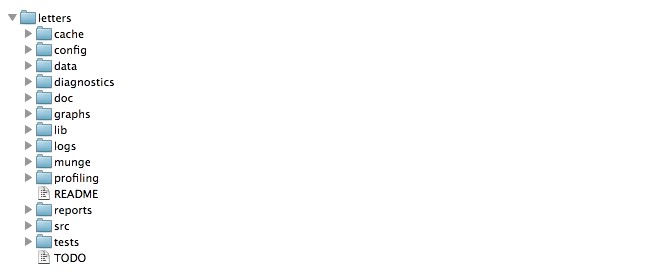
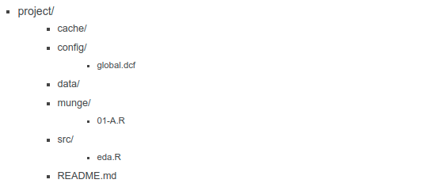

Capítulo 6 Anexos

6.1 Orden y estructura de proyecto
Resulta elemental contar con una adecuada estructura de carpetas que permitan al analista mantener orden y control a lo largo de todo el proyecto. Gran parte del caos en los problemas de analítica de datos nace desde el momento en que no se sabe en donde ubicar cada uno de los archivos necesarios para el proyecto.
6.1.1 Plantilla de estructura proyecto
En esta sección, se presenta una introducción a la librería ProjectTemplate, la cual facilita una estructura predeterminada que ayudará como punto de partida para mantener orden y control en cada momento del proyecto.
library(ProjectTemplate)
ProjectTemplate::create.project(project.name = 'intro2dsml', rstudio.project = T)ProjectTemplate::create.project() creará toda la estructura de carpetas para un nuevo proyecto. Configurará todos los directorios relevantes y sus contenidos iniciales. Para aquellos que solo desean la funcionalidad mínima, el argumento de template se puede establecer en minimal para crear un subconjunto de directorios predeterminados de ProjectTemplate.

cache: En esta carpeta se almacenarán los datos que desear cargarse automáticamente cuando se cargue la sesión del proyecto.
config: Se realiza la configuración de R y su sesión, la cual será establecida cada que se abra el proyecto.
data: Se almacenan las fuentes de información crudas necesarias en el proyecto. En caso de encontrarse codificadas en algún formato de archivo soportado por la librería, automáticamente serán cargadas a la sesión con la función
load.project()diagnostics: En este folder puedes almacenar cualquier script usado para realizar diagnósticos sobre los datos. Es particularmente útil para al análisis de elementos corruptos o problemáticos dentro del conjunto de datos.
doc: En este folder puede almacenarse cualquier documentación que haya escrito sobre el análisis. También se puede usar como directorio raíz para las páginas de GitHub para crear un sitio web de proyecto.
graphs: Sirve para almacenar las gráficas producidas por el análisis
lib: Aquí se almacenarán todos los archivos que proporcionen una funcionalidad útil para su trabajo, pero que no constituyan un análisis estadístico per se. Específicamente, debe usar el script lib/helpers.R para organizar cualquier función que use en su proyecto que no sea lo suficientemente general como para pertenecer a un paquete. Si tiene una configuración específica del proyecto que le gustaría almacenar en el objeto de configuración, puede especificarla en lib/globals.R.
logs: Aquí puede almacenarse un archivo de registro de cualquier trabajo que haya realizado en este proyecto. Si va a registrar su trabajo, se recomienda utilizar el paquete log4r, que ProjectTemplate cargará automáticamente si activa la opción de configuración de registro. El nivel de registro se puede establecer a través de la configuración logging_level en la configuración, el valor predeterminado es “INFO.”
munge: En este folder puede almacenarse cualquier código de preprocesamiento o manipulación de datos para el proyecto. Por ejemplo, si necesita agregar columnas en tiempo de ejecución, fusionar conjuntos de datos normalizados o censurar globalmente cualquier punto de datos, ese código debe almacenarse en el directorio munge. Los scripts de preprocesamiento almacenados en munge se ejecutarán en orden alfabético cuando se llame a la función load.project(), por lo que debe anteponerse números a los nombres de archivo para indicar su orden secuencial.
profiling: Aquí puede almacenar cualquier script que use para comparar y cronometrar su código.
reports: Aquí puede almacenar cualquier informe de salida, como versiones de tablas HTML o LaTeX, que produzca. Los documentos de sweave o brew también deben ir en el directorio de informes.
src: Aquí se almacenarán los scripts de análisis estadístico finales. Debe agregar el siguiente fragmento de código al comienzo de cada secuencia de comandos de análisis:
library('ProjectTemplate); load.project(). También debe hacer todo lo posible para asegurarse de que cualquier código compartido entre los análisis en src se mueva al directorio munge; si lo hace, puede ejecutar todos los análisis en el directorio src en paralelo. Una versión futura de ProjectTemplate proporcionará herramientas para ejecutar automáticamente cada análisis individual de src en paralelo.tests: Aquí puede almacenarse cualquier caso de prueba para las funciones que ha escrito. Los archivos de prueba deben usar pruebas de estilo testthat para que pueda llamar a la función
test.project()para ejecutar automáticamente todo su código de prueba.README: En este archivo, debe escribir algunas notas para ayudar a orientar a los recién llegados a su proyecto.
TODO: En este archivo, debe escribir una lista de futuras mejoras y correcciones de errores que planea realizar en sus análisis.
Si algunas o todas estas carpetas resultan innecesarias, puede comenzarse con una versión simplificada a través del comando:
create.project(project.name = 'intro2dsml', template='minimal')
6.1.2 Reproducibilidad
Trabajar de esta manera permitirá que un proyecto sea reproducible por cualquier persona con el acceso y los permisos adecuados para colaborar. Sin importar que existan nuevas versiones de R o sus librerías, este ambiente virtual creado será reisiliente a tales cambios, permitiendo que el proyecto perdure a lo largo del tiempo.
library(renv)
renv::init()renv::init() inicializa un nuevo entorno local de proyecto con una biblioteca R privada. La función renv::init() intenta garantizar que la biblioteca del proyecto recién creada incluya todos los paquetes de R utilizados actualmente por el proyecto. Lo hace rastreando archivos R dentro del proyecto en busca de dependencias. Los paquetes descubiertos luego se instalan en la biblioteca del proyecto, que también intentará ahorrar tiempo copiando paquetes de la biblioteca del usuario (en lugar de reinstalarlos desde CRAN) según corresponda.
Al usar renv, es posible “salvar” y “cargar” el estado de las librerías del proyecto a través de las siguientes funciones:
renv::snapshot() guarda el estado del proyecto en el archivo renv.lock
renv::restore() Restablece el estado del proyecto desde la última actualización de renv.lock.